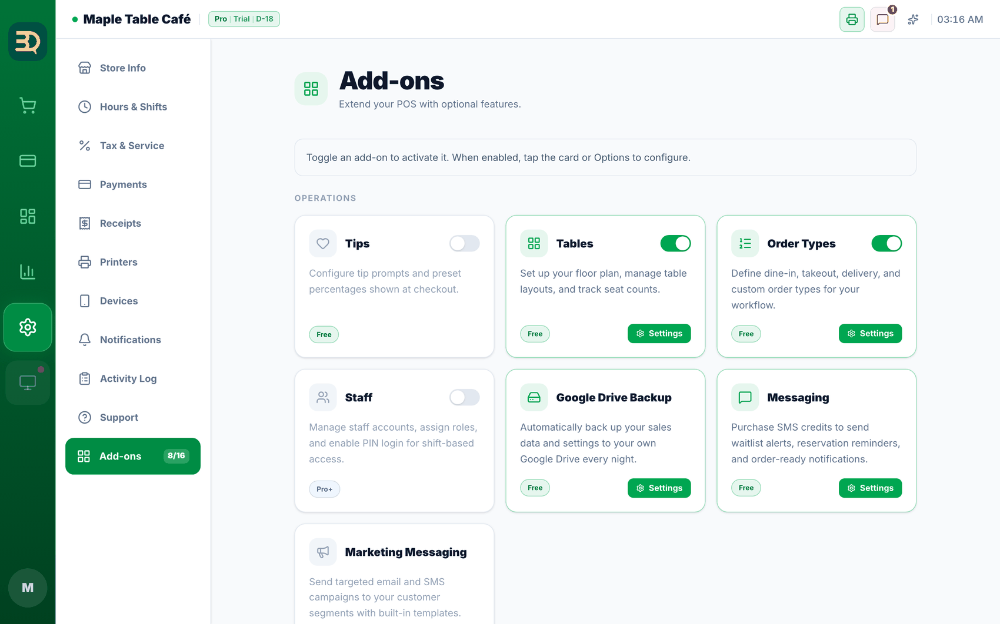
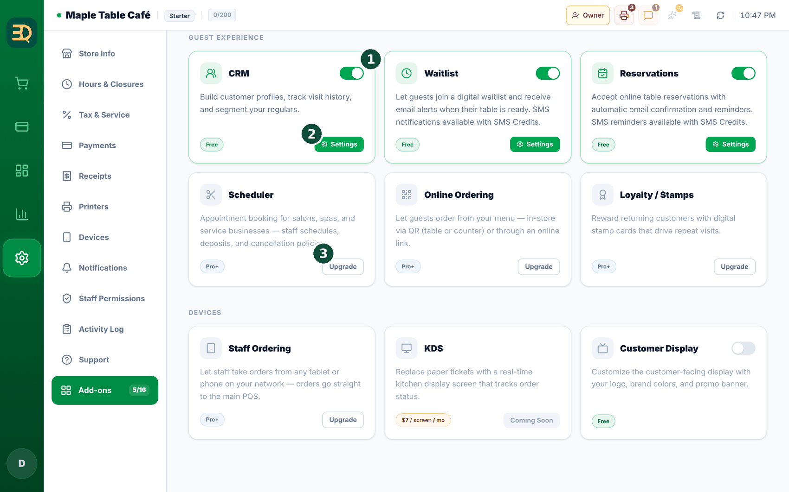

13Complementos y extras
Los complementos son funciones adicionales que puede activar o desactivar. Todos están en un mismo lugar. Solo paga por los que usa.
Activar y desactivar complementos


- Abra
Settings › Add-ons. Verá tarjetas agrupadas en Operations (Operaciones), Guest Experience (Experiencia del cliente) y Devices (Dispositivos), cada una con un interruptor (verde significa activado). - Toque un interruptor para activar o desactivar una función. Los complementos Free funcionan en todos los planes; algunos (como pedidos en línea/QR, fidelización, personal y agenda) son Pro; SMS es de pago por uso.
- Algunos complementos necesitan otro primero. Por ejemplo, activar Reservations con Tables desactivado muestra la ventana "Reservations requires Tables"; toque Enable Both (Activar ambos). Desactivar algo que necesitan otros complementos muestra Disable All (Desactivar todo).
- Junto a Add-ons (Complementos) en la barra lateral de ajustes hay un pequeño contador ("número activados / 16") que muestra cuántos de los 16 complementos están activados.
- Para los mensajes de texto (SMS), primero agregue dinero a su saldo (consulte Enviar mensajes a sus clientes). Después solo paga por los mensajes que realmente envía.
Pago por uso significa que paga un poco a medida que lo usa, en lugar de un precio mensual fijo. Recargue cuando su saldo esté bajo.
Cuando una función está bloqueada
¿El personal tocó algo bloqueado? Puede pedírselo a usted desde ahí mismo. En la web, al tocar una función bloqueada (Staff Ordering, Customer Display, Waitlist Kiosk), se ofrece enviarle las instrucciones en lugar de dejar al personal atascado: "Want us to email the owner instructions for turning on Staff Ordering?" → Send email (Enviar correo). Usted lo recibe en su bandeja de entrada y ellos siguen atendiendo la fila. Solo se envía una vez al día por función; un segundo intento dice "We already sent that email today — please check your inbox."
En un iPad o en la app de escritorio verá una breve explicación en lugar del botón de correo (normas del App Store); cambie su plan desde su cuenta de BrewDesk en la web.
Temas relacionados
¿Necesita más ayuda?
Puede enviar un ticket de soporte desde la app en Settings › Support.